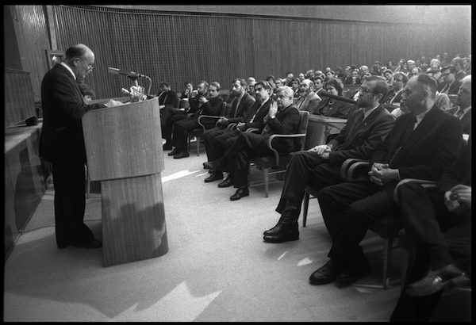

Pojasnilo, pojasnilo, pojasnilo, pojasnilo, pojasnilo, pojasnilo, pojasnilo, pojasnilo, pojasnilo, pojasnilo, pojasnilo, pojasnilo, pojasnilo, pojasnilo, pojasnilo, pojasnilo, pojasnilo, pojasnilo, pojasnilo, pojasnilo, pojasnilo, pojasnilo, pojasnilo, pojasnilo, pojasnilo, pojasnilo, pojasnilo, pojasnilo, pojasnilo, pojasnilo, pojasnilo, pojasnilo, pojasnilo, pojasnilo, pojasnilo, pojasnilo, pojasnilo, pojasnilo, pojasnilo, pojasnilo, pojasnilo, pojasnilo, pojasnilo, pojasnilo, pojasnilo, pojasnilo, pojasnilo, pojasnilo, pojasnilo, pojasnilo, pojasnilo, pojasnilo, pojasnilo.
25. 6. 1990 Predlog, da se začne postopek za sprejem Ustave RS
31. 8. 1990 Delovni osnutek Ustave RS ("Podvinska ustava") - ta v Poročevalcu ni bila objavljena, zato posredujemo sken iz arhiva Državnega zbora:
12. 10. 1990 Osnutek Ustave RS
12. 12. 1991 Predlog Ustave RS
19. 12. 1991 Predlog Ustave RS - dodatek
23. 12. 1991 Ustava RS je bila po sprejetju objavljena v Ur. l. 33/91 28.12. 1991
Zgodovina. Zgodovina. Zgodovina. Zgodovina. Zgodovina. Zgodovina. Zgodovina. Zgodovina. Zgodovina. Zgodovina. Zgodovina. Zgodovina. Zgodovina. Zgodovina. Zgodovina. Zgodovina. Zgodovina. Zgodovina. Zgodovina. Zgodovina. Zgodovina. Zgodovina. Zgodovina. Zgodovina. Zgodovina. Zgodovina. Zgodovina. Zgodovina.
Gradivlo, gradivo, gradivo, gradivo, gradivo, gradivo, gradivo, gradivo, gradivo, gradivo, gradivo, gradivo, gradivo, gradivo, gradivo, gradivo, gradivo, gradivo, gradivo, gradivo, gradivo, gradivo, gradivo, gradivo, gradivo, gradivo, gradivo, gradivo, gradivo, gradivo, gradivo, gradivo, gradivo, gradivo, gradivo, gradivo, gradivo, gradivo, gradivo, gradivo, gradivo.